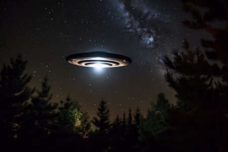
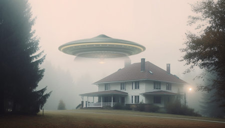

LES Objets Volants Non Identifiés, La Menace contre les humains

C'est quoi un OVNI?
Un objet volant non identifié, généralement appelé ovni, est un phénomène aérien que des témoins disent avoir vu ou ayant été enregistré par des capteurs (caméra vidéo, appareil photographique, radar, etc.) sans qu'on sache comment les expliqué.
Premieres observations
Les premières observations modernes d'objets volants non identifiés remontent à la Seconde Guerre mondiale, où des pilotes signalèrent des engins mystérieux surnommés "chasseurs fantômes". En 1946, plus de 2 000 témoignages furent recensés principalement en Scandinavie ainsi que dans plusieurs pays européens, les observateurs pensant avoir affaire à des prototypes de fusées soviétiques héritées des technologies allemandes. Ces objets furent baptisés "fusées fantômes" avant que le terme "soucoupes volantes" ne s'impose définitivement suite au témoignage retentissant du pilote américain Kenneth Arnold en 1947.
Le 26 juin 1947, Arnold raconta à la radio avoir observé deux jours plus tôt, près du mont Rainier dans l'État de Washington, neuf objets volants brillants et extrêmement rapides qu'il estima à environ 1 800 km/h. Il les décrivit se déplaçant en diagonale comme des oies, avec un mouvement sautillant similaire à celui d'une soucoupe ricochant sur l'eau. Bien qu'Arnold faisait référence au mouvement de ces objets et non à leur forme, la presse popularisa le terme "soucoupes volantes" qui resta définitivement associé aux ovnis. Cet événement eut un retentissement mondial considérable, attirant journalistes, agents du FBI et du renseignement militaire sur les lieux, et déclencha une vaste controverse alimentant des théories aussi bien sur des prototypes secrets américains ou soviétiques que sur d'éventuelles visites extraterrestres.
Encore plus de temoignage
Suite au témoignage de Kenneth Arnold, de nombreux autres témoins se manifestèrent et le phénomène des soucoupes volantes dépassa rapidement les frontières américaines pour devenir un sujet mondial. Parmi les observations marquantes, un équipage de United Airlines rapporta avoir été escorté par neuf objets en forme de disque au-dessus de l'Idaho le 4 juillet 1947, un témoignage jugé particulièrement crédible par les médias qui en firent leurs manchettes pendant plusieurs jours.
C'est également ce même 4 juillet que Marc Brazel, propriétaire d'un ranch près de Roswell au Nouveau-Mexique, découvrit des débris mystérieux sur ses terres. Un militaire de la base locale annonça dans un communiqué de presse la récupération d'une soucoupe volante, avant que l'armée ne rectifie le lendemain en affirmant qu'il s'agissait simplement d'un ballon-sonde. L'affaire tomba alors dans l'oubli pendant une trentaine d'années, jusqu'à ce qu'un livre publié en 1980 par Charles Berlitz et William Moore la remette sur le devant de la scène. Des témoignages successifs vinrent progressivement enrichir et complexifier l'histoire, notamment celui du major Jesse Marcel qui affirmait en 1978 que les débris étaient d'origine extraterrestre et que ceux montrés aux journalistes n'étaient pas les véritables débris récupérés. Face à ces nouvelles révélations, une enquête officielle fut diligentée, aboutissant à deux rapports concluant que les débris provenaient d'un programme gouvernemental secret et que les témoignages sur des extraterrestres résultaient vraisemblablement d'interprétations erronées d'accidents militaires, des conclusions fermement rejetées par les partisans de la théorie extraterrestre.

Ce que les autorités americaines ont fait
Dès 1947, les autorités militaires américaines prirent au sérieux le phénomène des ovnis, craignant qu'il s'agisse de prototypes soviétiques secrets. Des procédures strictes de collecte et de transmission des observations furent mises en place, classées secret défense, obligeant militaires et pilotes civils à rapporter toute observation. Plusieurs projets d'enquête furent lancés, notamment le projet Sign, qui envisagea brièvement l'hypothèse extraterrestre avant de la rejeter sous pression hiérarchique. En 1968, l'armée américaine cessa officiellement ses investigations, concluant que le phénomène ne représentait aucune menace pour la sécurité nationale et n'avait aucune origine extraterrestre. Cependant, en 2017, le New York Times révéla l'existence d'un programme secret d'étude des phénomènes aériens, accompagné de vidéos déclassifiées montrant des objets volants se déplaçant à très grande vitesse, relançant ainsi le débat public sur la question.
la verité
Les Gouvernements Savent Tout… Et Ils Se Taisent
Depuis 1947, une question hante les esprits : que cachent réellement les gouvernements ? Les faits sont troublants. Des rapports classifiés détruits, des personnels militaires congédiés du jour au lendemain pour avoir simplement soutenu l'hypothèse extraterrestre, des documents administratifs effacés sans qu'on sache jamais par qui ni sur ordre de qui. Le projet Sign, le projet Grudge, le projet Blue Book… autant de commissions officielles qui semblent avoir eu pour mission non pas de découvrir la vérité, mais de l'étouffer. Et si tout ce que nous avons accepté comme "explication rationnelle" n'était qu'un gigantesque rideau de fumée soigneusement orchestré par des puissances qui en savent infiniment plus que ce qu'elles admettent ?
Roswell : Le Secret le Mieux Gardé de l'Histoire
L'affaire de Roswell est peut-être la preuve la plus glaçante d'une manipulation à grande échelle. En l'espace de quelques heures seulement, l'armée américaine passa d'une annonce officielle de récupération d'une soucoupe volante à une rétractation précipitée parlant d'un simple ballon-sonde. Des témoins furent intimidés. Des débris disparurent mystérieusement. Des documents administratifs couvrant des années entières furent détruits sans laisser de trace. Pire encore, un général aurait lui-même substitué les véritables débris par d'autres avant de les présenter aux journalistes. Trente ans de silence, puis soudainement des témoignages qui resurgissent, des militaires qui parlent sur leur lit de mort. Que cherchait-on à dissimuler avec une telle frénésie ? La réponse pourrait bien changer à jamais notre vision de l'humanité et de notre place dans l'univers.
Nous Ne Sommes Pas Seuls… Et Ils Le Savent Depuis Longtemps
Les vidéos déclassifiées publiées en 2017 par le New York Times ont provoqué un séisme dans l'opinion publique. Des objets volants se déplaçant à des vitesses défiant toute technologie connue, effectuant des manœuvres physiquement impossibles pour nos appareils actuels. Barack Obama lui-même a reconnu publiquement en 2021 l'existence d'objets que les États-Unis sont incapables d'identifier ou d'expliquer. Alors pourquoi avoir attendu si longtemps ? Pourquoi des décennies de déni, de moqueries envers les témoins, de rapports détruits et de personnels réduits au silence ? La réponse la plus terrifiante est peut-être la plus simple : ils savent. Ils savent depuis le début. Et ils ont décidé, pour des raisons que nous ne pouvons qu'imaginer, que nous ne sommes pas encore prêts à entendre la vérité.